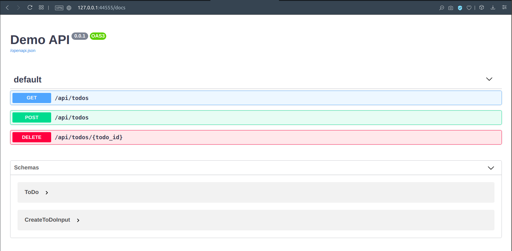
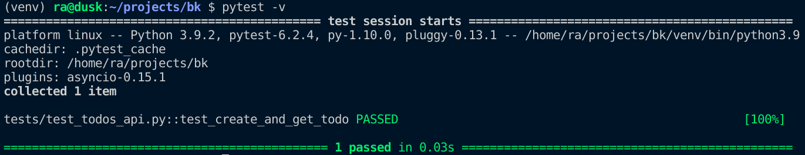

Testing a BlackSheep app¶
This page describes how a BlackSheep web application can be tested, documenting
the built-in TestClient class and providing a tutorial that shows how it can
be used with pytest to test an API. It covers the following:
- How to use the provided
TestClient. - How to configure tests using
pytest. - How to run integration tests using a server process.
TL;DR A complete example with testing configured for pytest is
available at:
./testing-api.
Those who don't want to follow the tutorial on this page can read the code
in the example.
Overview of the TestClient class¶
The TestClient class provides useful methods to test a blacksheep
application, simulating web requests from an ASGI server. Simulating web
requests has the benefit that tests execute fast and don't require a real HTTP
Server and actual HTTP client-server interactions. At the same time, they
recreate a full end-to-end scenario of how requests are handled by an
application server.
A basic example of the TestClient would look like this:
import asyncio
from blacksheep import Application, get
from blacksheep.testing import TestClient
app = Application()
@get("/")
async def hello(name: str = "World"):
return f"Hello, {name}!"
async def test():
# the application needs to handle its start event, to recreate a valid scenario
await app.start()
client = TestClient(app)
response = await client.get("/")
text = await response.text()
assert response.status == 200
assert text == "Hello, World!"
response = await client.get("/", query={"name": "Foo"})
text = await response.text()
assert response.status == 200
assert text == "Hello, Foo!"
print("OK")
asyncio.run(test())
A test client provides the following methods:
| Method | Description |
|---|---|
| get | Simulates an HTTP GET request. |
| post | Simulates an HTTP POST request. |
| put | Simulates an HTTP PUT request. |
| patch | Simulates an HTTP PATCH request. |
| delete | Simulates an HTTP DELETE request. |
| head | Simulates an HTTP HEAD request. |
| options | Simulates an HTTP OPTIONS request. |
| trace | Simulates an HTTP TRACE request. |
Info
By default a TestClient simulates web requests creating ASGI scopes,
however, it can be configured with a custom implementation of
AbstractTestSimulator to generate real HTTP requests against a real HTTP
server. For simplicity, this is not documented here.
Tutorial¶
This tutorial illustrates how to create a basic TODOs API and prepare tests for it, step by step.
Requirements¶
- The requirements described for the getting started tutorial
- Familiarity with test frameworks and common concepts like
fixtures; if you are not familiar with this subject, readpytestdocumentation for an overview (e.g. pytest home, what are fixtures) - Basic knowledge about
pydanticmodels is a plus, however, the same principles can be applied to Python built-indataclasses
Preparing the project structure¶
Prepare a Python virtual environment, as described in the getting started
tutorial. In addition to blacksheep and uvicorn,
install the following packages in the virtual environment:
Then create a basic folder structure, like described by the following tree:
For example, using GNU Bash:
mkdir app
touch app/app.py
touch app/__init__.py
mkdir app/routes
touch app/routes/__init__.py
touch domain.py
touch server.py
Edit domain.py file, to define two domain classes:
from pydantic import BaseModel
class ToDo(BaseModel):
id: int
title: str
description: str
class CreateToDoInput(BaseModel):
title: str
description: str
Create a todos.py file in app.routes package, that will contain the
definition of the TODOs API. Start with the following contents:
# ./app/routes/todos.py
from blacksheep import get, post, delete
from domain import ToDo, CreateToDoInput
@get("/api/todos")
async def get_todos() -> list[ToDo]:
...
@get("/api/todos/{todo_id}")
async def get_todo(todo_id) -> ToDo | None:
...
@post("/api/todos")
async def create_todo(data: CreateToDoInput) -> ToDo:
...
@delete("/api/todos/{todo_id}")
async def delete_todo(todo_id) -> None:
...
Create a main.py file in app package, that declares an application:
And finally a server.py file at the project's root:
Navigating the API using OpenAPI Documentation¶
At this point, the application can already be started. The API methods are not implemented, yet, so they cannot do anything interesting. However, the framework can generate OpenAPI Documentation and expose a documentation UI.
To do so, create a docs.py file in the app package:
# ./app/docs.py
from blacksheep.server.openapi.v3 import OpenAPIHandler
from openapidocs.v3 import Info
docs = OpenAPIHandler(
info=Info(title="Demo API", version="0.0.1"), anonymous_access=True
)
# include only endpoints whose path starts with "/api/"
docs.include = lambda path, _: path.startswith("/api/")
And modify /app/main.py file to configure the generation of OpenAPI
Documentation:
from blacksheep import Application
from .docs import docs # +++
app = Application()
docs.bind_app(app) # +++
Start the application using the following command:
And navigate to the http://127.0.0.1:44555/docs to see the documentation generated automatically by BlackSheep:

Note how, thanks to type annotations and support for pydantic, blacksheep
generates automatically OpenAPI Documentation version 3 for all responses
and input request bodies and parameters.
Creating a mocked TODOs API¶
For the sake of the testing demo, let's mock the implementation of the TODOs API to work with data stored in memory:
# ./app/routes/todos.py
from blacksheep import get, delete, not_found, post
from domain import CreateToDoInput, ToDo
_MOCKED: dict[int, ToDo] = {
1: ToDo(
id=1,
title="BlackSheep Documentation",
description="Update the documentation with information about the new features.",
),
2: ToDo(
id=2,
title="Transfer the documentation",
description="Transfer the documentation from Azure DevOps to GitHub.",
),
3: ToDo(
id=3,
title="Mow the grass",
description="Like in title.",
),
}
@get("/api/todos")
async def get_todos() -> list[ToDo]:
return list(_MOCKED.values())
@get("/api/todos/{todo_id}")
async def get_todo(todo_id: int) -> ToDo | None:
try:
return _MOCKED[todo_id]
except KeyError:
return not_found() # type: ignore
@post("/api/todos")
async def create_todo(data: CreateToDoInput) -> ToDo:
item = ToDo(id=len(_MOCKED) + 1, title=data.title, description=data.description)
_MOCKED[item.id] = item
return item
@delete("/api/todos/{todo_id}")
async def delete_todo(todo_id: int) -> None:
try:
del _MOCKED[todo_id]
except KeyError:
pass
Now that the API is mocked, let's see how to add tests for it.
Using the TestClient with pytest¶
Create a tests package and the following files:
conftest.py is a special file used by pytest to arrange fixtures. Edit this
file to include fixtures definition to arrange tests for the web application:
# ./tests/conftest.py
import asyncio
import pytest
import pytest_asyncio
from blacksheep.testing import TestClient
from server import app as app_server
@pytest.fixture(scope="session")
def event_loop(request):
loop = asyncio.get_event_loop_policy().new_event_loop()
yield loop
loop.close()
@pytest_asyncio.fixture(scope="session")
async def api():
await app_server.start()
yield app_server
await app_server.stop()
@pytest_asyncio.fixture(scope="session")
async def test_client(api):
return TestClient(api)
Note how the file contains three fixtures:
event_loop, for asyncio: it needs to be redefined to supportsessionscopeapi, which yields an instance of the started web applicationtest_client, which returns the instance ofTestClientthat can be used to fire web requests on the web application
These fixtures enable testing all request handlers defined in the application.
Info
💡 It is possible to apply special configuration to the application server, for example overriding services in the DI container just for tests, for example replacing a class that interacts with a PostgreSQL Server to use instead SQLite for tests.
Finally, define a first test for the TODOs API:
# ./tests/test_todos_api.py
import pytest
from blacksheep.contents import JSONContent
from blacksheep.testing import TestClient
from domain import CreateToDoInput, ToDo
@pytest.mark.asyncio
async def test_create_and_get_todo(test_client: TestClient) -> None:
create_input = CreateToDoInput(
title="Update documentation",
description="Update blacksheep's documentation to describe all new features.",
)
response = await test_client.post(
"/api/todos",
content=JSONContent(create_input),
)
assert response is not None
data = await response.json()
assert data is not None
assert "id" in data
todo_id = data["id"]
response = await test_client.get(f"/api/todos/{todo_id}")
assert response is not None
data = await response.json()
assert data is not None
todo = ToDo(**data)
assert todo.title == create_input.title
assert todo.description == create_input.description
Now it's possible to start the tests using pytest:
If the steps above were done correctly, the test succeeds and pytest produces
feedback like in the following picture (using the verbose flag -v):

How to run integration tests using a server process.¶
The following example shows how to configure a @pytest.fixture that starts
an uvicorn process in memory to run integration tests against a real ASGI
server:
# example server fixture
import os
from multiprocessing import Process
from time import sleep
import pytest
import uvicorn
from server import app
def get_sleep_time():
# when starting a server process,
# a longer sleep time is necessary on Windows
if os.name == "nt":
return 1.5
return 0.5
server_host = "127.0.0.1"
server_port = 44555
def _start_server():
uvicorn.run(app, host=server_host, port=server_port, log_level="debug")
@pytest.fixture(scope="session", autouse=True)
def server():
server_process = Process(target=_start_server)
server_process.start()
sleep(get_sleep_time())
if not server_process.is_alive():
raise TypeError("The server process did not start!")
yield 1
sleep(1.2)
server_process.terminate()
The same server host and port can then be used with the desired HTTP Client
implementation to run tests on the server, to recreate a full HTTP
client-server communication.
The following code shows an example of @pytest.fixture returning an HTTP
client that can make requests to the running servers, using
requests library:
import requests
from urllib.parse import urljoin
server_host = "127.0.0.1"
server_port = 44555
class ClientSession(requests.Session):
def __init__(self, base_url):
self.base_url = base_url
super().__init__()
def request(self, method, url, *args, **kwargs):
return super().request(method, urljoin(self.base_url, url), *args, **kwargs)
@pytest.fixture(scope="session")
def session_two(server_host, server_port_two):
return ClientSession(f"http://{server_host}:{server_port_two}")
And a full example for the TODO API described in the tutorial could look like
the following (the example requires the requests library):
import os
from multiprocessing import Process
from time import sleep
from urllib.parse import urljoin
import pytest
import requests
import uvicorn
from server import app
class ClientSession(requests.Session):
def __init__(self, base_url):
self.base_url = base_url
super().__init__()
def request(self, method, url, *args, **kwargs):
return super().request(method, urljoin(self.base_url, url), *args, **kwargs)
def get_sleep_time():
# when starting a server process,
# a longer sleep time is necessary on Windows
if os.name == "nt":
return 1.5
return 0.5
server_host = "127.0.0.1"
server_port = 44555
@pytest.fixture(scope="session")
def client_session():
return ClientSession(f"http://{server_host}:{server_port}")
def _start_server():
uvicorn.run(app, host=server_host, port=server_port, log_level="debug")
@pytest.fixture(scope="session", autouse=True)
def server():
server_process = Process(target=_start_server)
server_process.start()
sleep(get_sleep_time())
if not server_process.is_alive():
raise TypeError("The server process did not start!")
yield 1
sleep(1.2)
server_process.terminate()
@pytest.mark.asyncio
async def test_get(client_session):
response = client_session.get("/api/todos/1")
assert response.status_code == 200
Info
Fixtures can be defined in a dedicated module, to keep the tests code clean.
Last modified on: 2025-04-22 08:29:25